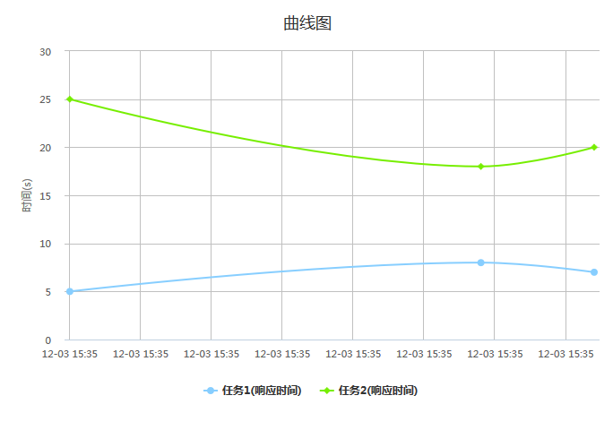

var data=[{"taskName":"任务1","响应时间":5,"datetime":"2014-01-01 08:00"},
{"taskName":"任务1","响应时间":8,"datetime":"2014-01-05 08:20"},
{"taskName":"任务1","响应时间":7,"datetime":"2014-01-11 09:00"},
{"taskName":"任务1","响应时间":6,"datetime":"2014-01-30 10:00"}
];
var option={
containerId:"container", //放置HighCharts容器对应的ID
shows:["响应时间","运行时间"], //要显示的指标
title:"曲线图", //标题
subtitle:"副标题",
yTitle:"时间", //y轴标题
yUnit:"s" , //y轴单位
xName:"datetime" //x轴显示的名称
};
